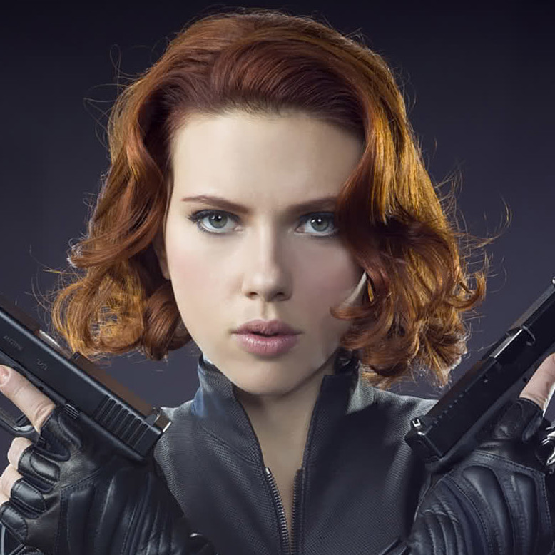

VINGADORES
O Capitão América é a identidade heroica de Steve Rogers. Além disso, é considerado como o primeiro Vingador. O Capitão fez parte de um movimento patriota que trazia super-heróis, principalmente, atuando na Segunda Guerra Mundial. Dessa forma, Steve atuava ao lado de Bucky Barnes, seu melhor amigo, no combate contra nazistas. No entanto, consequentemente, fez com que sua popularidade ficasse reduzida ao fim da guerra.
Formou-se em engenharia elétrica e física no MIT (Massachusetts Institute of Technology) quando tinha apenas 15 anos. Aos 21 anos, com a morte de seus pais em um acidente de carro, herdou as Indústrias Stark, um complexo industrial-militar especializado em armas avançadas com contratos com o governo americano.

Ela foi treinada pelo Programa Viúva Negra da Sala Vermelha, onde foi criada para se tornar uma espiã russa. Lá, destacou-se e logo se tornou uma espiã-mestre e uma das maiores assassinas do mundo — antes de se tornar uma grande defensora das forças que ameaçam a vida na Terra.
Clinton Francis "Clint" Barton, mais conhecido como Gavião Arqueiro, é o maior atirador vivo do planeta e um ex-agente especial da S.H.I.E.L.D., onde trabalhou sob a supervisão de Phil Coulson. Conhecido pelo uso do arco e flechas como sua principal arma, Barton tornou-se um dos melhores agentes da S.H.I.E.L.D. e foi responsável pelo recrutamento da Viúva Negra, com quem desenvolveu uma forte amizade.
Thor é o "Deus do Trovão",um membro da raça conhecida como asgardianos, um grupo de seres humanóides da dimensão do bolso de Asgard, o Reino Eterno. Thor é filho de Odin, o Pai de Todos e rei de Asgard. Ele era adorado pelos humanos conhecidos como vikings e tornou-se parte da mitologia nórdica. Armado com seu martelo Uru encantado Mjolnir, que o ajuda a canalizar suas energias divinas, ele se tornou o guerreiro mais poderoso dos Dez Reinos.
Robert Bruce Banner era o filho do Dr. Brian Banner, um cientista atômico, e sua esposa Rebecca. Embora Rebecca amasse profundamente Bruce, que retribuiu o carinho, Brian odiava o filho. Alcoólatra, Brian Banner foi levado por um ciúme insano por Bruce, por ele ser objeto do amor de Rebecca. Além disso, Brian acreditava que seu trabalho com radiação tinha alterado o seu DNA e lhe deu um filho mutante. Ele finalmente assassinou Rebecca e foi colocado em um hospital psiquiátrico. Bruce, um grande e jovem intelectual, foi criado por sua tia, a senhora Drake, e internalizou sua grande dor e raiva sobre os sofrimentos de sua infância. Bruce mais tarde frequentou a faculdade onde conheceu Tony Stark, com quem iniciou uma grande amizade e também uma rivalidade.
Finalmente, como um adulto e um gênio em física nuclear, Bruce passou a trabalhar em um departamento de Defesa dos Estados Unidos, em um centro de pesquisa nuclear na Base do Deserto, no Novo México. Lá ele conhece o General Ross, o oficial da Força Aérea no comando da base, e sua filha Betty. Bruce e Betty Ross se apaixonaram um pelo outro. Bruce desenhou e supervisionou a construção da "Bomba Gama" ou "Bomba-G", uma arma nuclear, possuindo alto rendimento de radiação gama.